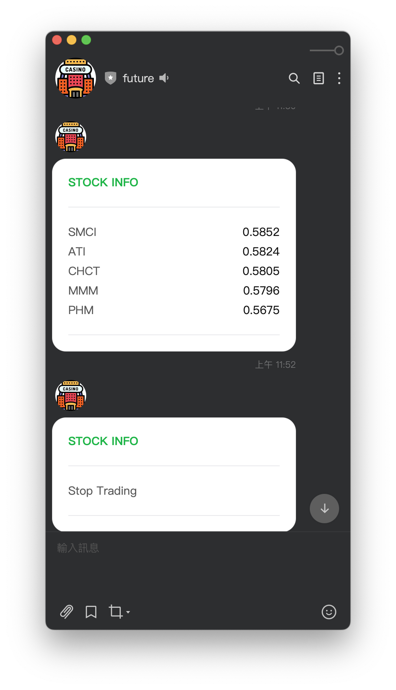

# 利用RAG # 打造投資策略的 # Try & Error Microsoft 聚技站 2023/03/13 陳奎銘 Ben
<!-- .slide: data-background-iframe="media/Ben.html" -->
<!-- .slide: data-background="media/MVP.png" --> <font size=6>https://reurl.cc/v0OYEy</font> <br> <br> <br> <br>
### 用 27 個問題
## 平均年化報酬 13.6%
# 資金成長超過 10 倍
> Investment must be rational; if you can't understand it, don't do it. > > —— Warren Buffett, *Forbes 400, 21 October 1991*
看財報來了解公司？
財報動不動就幾十頁......看得有點累......
這時候就要靠高級伴讀書僮- GPT！
## 以下是我不會講的 - 原理 - 數學 - 明牌
## 以下是我會講的 - 作法與流程 - 血汗與花費 - 地雷
先來問問 ChatGPT 問題～
<!-- .slide: data-background="media/chatgpt_1.png" -->
<!-- .slide: data-background="media/chatgpt_2.png" -->
發現一篇可能可以解決我的問題的 Paper
## `GPT-InvestAR` > Gupta, U. (2023). GPT-InvestAR: Enhancing Stock Investment Strategies through Annual Report Analysis with Large Language Models. arXiv. https://arxiv.org/abs/2309.03079
看起來，我們可以試試 RAG ## Retrival Augmented Generation
<!-- .slide: data-background-iframe="media/RAG.html" -->
 <font size=1>from: https://python.langchain.com/docs/modules/data_connection</font>
<!-- .slide: data-background="#999999" --> <!-- .slide: data-background-iframe="media/flow.html" -->
## 資料搜集 - 1505 stocks: - S&P 500, S&P 400, S&P 600 - 2002 ~ 2023 - Annual Report - 10-K Filings - ~~[Financial Modeling Prep](https://site.financialmodelingprep.com/developer/docs/#Annual-Reports-on-Form-10-K)~~⮕[edgar-crawler](https://github.com/nlpaueb/edgar-crawler) - $ 29 ⮕ free <!-- .element: class="fragment" data-fragment-index="1" --> - Stock Price - 每日收盤價 (Adj Close) - ~~[`openbb`](https://openbb.co/)~~ ⮕ Yahoo! Finace
<!-- .slide: data-background="#ffffff" --> <!-- .slide: data-background-iframe="media/2023-02-24.htm" -->
<!-- .slide: data-background="media/stock_price.png" -->
## 資料說明 - 總共 24,292 Data points - Data points: - 某一檔股票某一年度的財報 ⮕ 分數 - 觀察某一檔股票某一年度的股價變化 ⮕ 報酬率 - 年度： - 開始：當年 10-K filings 發表後兩天 - 結束：次年 10-K filings 發表前兩天 - 同時以同樣方法觀察 S&P 500 的指數變化
## 資料分割 - Training Data: - 2002 ~ 2017 - *1000* data points (out of 17.4k) - Test Data: - 2018 ~ 2023 - *500* data points (out of 6.8k)
<!-- .slide: data-background="#999999" --> <!-- .slide: data-background-iframe="media/flow.html" -->
<!-- .slide: data-background="#999999" --> <!-- .slide: data-background-iframe="media/make_target.html" -->
### Make Target - Target: - 12-Month Return: 年報酬率 - Annual Return - Max Return: 最大報酬率 - 98th percentile of return from the filing date represented as Target Max
### Make Target - 將抽樣後的報酬率，依每年排序 - 針對排名做標準化 - 求出百分位數後，依照百分位數做分組 - 最後得到 Target：0, 0.25, 0.5, 0.75, 1 Note: 分年分配目標值：目的：為了在每年內相對排名股票的回報。方法：每年單獨分配股票的目標值，這樣可以更好地比較同一年內不同股票的表現。回報的排名和標準化：首先：回報首先被排名，這意味著根據其回報率對股票進行排序。然後：然後對排名後的回報進行標準化，這有助於消除數據中的任何潛在偏差或異常值。目標值的範圍限制：範圍：[0, 1]。解釋：其中1表示更高的回報，這意味著目標值1表示該股票在該年度有更高的回報。基於百分位數的分箱：最後：對標準化的回報進行分箱，基於百分位數，這樣目標值的範圍是[0, 1]。目的：這有助於創建一個更均勻和有序的目標值分布，可以更好地用於機器學習模型的訓練。
<!-- .slide: data-background="#999999" --> <!-- .slide: data-background-iframe="media/flow.html" -->
<!-- .slide: data-background="#999999" --> <!-- .slide: data-background-iframe="media/create_feature.html" -->
### Create Feature - Build Vector Store - Model: all-mpnet-base-v2 - Vector DB: Chroma - Feature: Confidence Score - 準備關於財報的問題 - 請 GPT (GPT-3.5-Turbo) 依照公司的財報回答問題，給予評分
### `Sentence-Transformers Model` - all-mpnet-base-v2 - maps sentences & paragraphs to a 768 dimensional dense vector space - Can be used for tasks like clustering or semantic search - https://huggingface.co/sentence-transformers/all-mpnet-base-v2
#### `Massive Text Embedding Benchmark` https://huggingface.co/blog/mteb 

### `all-mpnet-base-v2` - Speed and performance balance - Slightly slower - Significantly stronger
### 準備關於財報的問題 - 27 Questions - Paper 沒有明講，只有以下範例 > Does the company have a clear strategy for growth and innovation? > Are there any recent strategic initiatives or partnerships?
寄信問作者，作者回答......
<iframe width="560" height="315" src="https://www.youtube.com/embed/X_9lP3hM--E?si=zUgn6G2QIYAOazdY" title="YouTube video player" frameborder="0" allow="accelerometer; autoplay; clipboard-write; encrypted-media; gyroscope; picture-in-picture; web-share" allowfullscreen></iframe>
### 藏在程式碼的小提示 
### GPT 幫我問問題 ``` { "feature_overall": "On a scale of 0 to 100, how would you rate the company's overall performance and prospects based on the annual report?", "feature_revenue_1": "Based on the annual report, how would you rate the company's revenue performance in the last fiscal year on a scale of 0 to 100?", "feature_revenue_2": "On a scale of 0 to 100, how successful has the company been in expanding into new markets or segments that contributed to revenue?", "feature_revenue_3": "How effective were the company's strategies in increasing revenue streams, on a scale of 0 to 100?", "feature_profit_1": "Rate the company's profit margins in the last fiscal year on a scale of 0 to 100.", "feature_profit_2": "How effective has the company been in implementing cost-saving measures to improve profit margins, on a scale of 0 to 100?", "feature_debt_1": "Rate the company's debt management and current debt structure on a scale of 0 to 100.", "feature_cashflow_2": "How would you rate the company's cash flow performance in the recent fiscal year on a scale of 0 to 100?", "feature_dividend": "Based on the annual report, how would you rate the company's dividend payouts or changes to its dividend policy on a scale of 0 to 100?", "feature_management_1": "Rate the effectiveness of the significant decisions made by the management in the recent year on a scale of 0 to 100.", "feature_management_2": "How successful has the management been in initiating strategic partnerships or alliances, on a scale of 0 to 100?", "feature_industry_1": "Rate the company's positioning and competitive advantages in its industry on a scale of 0 to 100.", "feature_industry_2": "How proactive has the company been in identifying new industry trends or opportunities for expansion, on a scale of 0 to 100?", "feature_research": "Rate the company's investments in research and development on a scale of 0 to 100.", "feature_guidance": "Based on the annual report, how clear and promising is the company's financial guidance or outlook for the upcoming fiscal year on a scale of 0 to 100?", "feature_leadership": "Rate the effectiveness and vision of the company's leadership or organizational structure on a scale of 0 to 100.", "feature_macro": "How well is the company adapting to macroeconomic factors and global market trends, on a scale of 0 to 100?", "feature_diversification": "Rate the company's diversification strategies in terms of mitigating risks and enhancing growth on a scale of 0 to 100.", "feature_customerbase": "How would you rate the company's efforts in expanding its customer base or improving customer retention on a scale of 0 to 100?", "feature_esg": "Rate the company's initiatives in terms of environmental, social, and governance (ESG) factors on a scale of 0 to 100.", "feature_competition_1": "Rate the company's positioning against its primary competitors on a scale of 0 to 100.", "feature_competition_2": "How well has the company identified and addressed new competitive threats or market challenges, on a scale of 0 to 100?", "feature_ip": "Rate the company's efforts in securing new intellectual property or patents on a scale of 0 to 100.", "feature_digitaltransformation": "How would you rate the company's steps towards digital transformation and technological advancements on a scale of 0 to 100?", "feature_regulations": "Rate the company's efforts in navigating regulatory challenges and compliance requirements on a scale of 0 to 100.", "feature_onlinepresence": "How effective has the company been in expanding its online presence and digital marketing strategies, on a scale of 0 to 100?", "feature_legal": "Based on the annual report, how would you rate the company's handling of legal issues or litigation in the recent year on a scale of 0 to 100?" } ```
# 開始 RAG
### `Azure OpenAI- Create Resource` - Model: gpt-35-turbo-instruct - Region: East US or Sweden Central - 詳細文件：https://reurl.cc/nrdloe 
### `Azure OpenAI- Deploy` - 詳細文件：https://reurl.cc/bD8dWX 
### `Azure OpenAI- Key & Endpoint` - 詳細文件：https://reurl.cc/OG3Qpr 
### `Python Package` ``` pysqlite3-binary sqlalchemy==1.4.51 openai==1.13.3 langchain==0.1.11 llama-index==0.8.69.post2 chromadb==0.4.14 ```
### RAG- 建立Chroma DB ```python [1-14|16-24|26-35|37-45] __import__('pysqlite3') import sys sys.modules['sqlite3'] = sys.modules.pop('pysqlite3') import chromadb from llama_index import ( VectorStoreIndex, SimpleDirectoryReader, GPTVectorStoreIndex, StorageContext, ServiceContext, LangchainEmbedding ) from llama_index.vector_stores import ChromaVectorStore from langchain.embeddings.huggingface import HuggingFaceEmbeddings #----------------------------------------------------------- # Set Storage of Chroma db = chromadb.PersistentClient( path="chroma/NVDA/2024-02-21") chroma_collection = db.create_collection("2024-02-21") vector_store = ChromaVectorStore( chroma_collection=chroma_collection) storage_context = StorageContext.from_defaults( vector_store=vector_store) #----------------------------------------------------------- # Set Embedding Model embedding_model = LangchainEmbedding( HuggingFaceEmbeddings( model_name="sentence-transformers/all-mpnet-base-v2" ) ) service_context = ServiceContext.from_defaults( embed_model=embedding_model, chunk_size = 512, chunk_overlap=32) #----------------------------------------------------------- # Load pdf and Create Vector Store ar_filing_path = "pdf/NVDA/2024-02-21" documents = SimpleDirectoryReader( ar_filing_path).load_data() VectorStoreIndex.from_documents( documents, storage_context=storage_context, service_context=service_context ) ```
### RAG- 建立Chroma DB ```bash find chroma/NVDA/2024-02-21 ``` ```bash . ./chroma.sqlite3 ./61d6cd5c-9d81-4d29-ab75-5c1c362bb364 ./61d6cd5c-9d81-4d29-ab75-5c1c362bb364/header.bin ./61d6cd5c-9d81-4d29-ab75-5c1c362bb364/data_level0.bin ./61d6cd5c-9d81-4d29-ab75-5c1c362bb364/length.bin ./61d6cd5c-9d81-4d29-ab75-5c1c362bb364/link_lists.bin ```
### RAG- 建立 index ```python [1-9|12-24] import os from langchain.llms import AzureOpenAI os.environ["OPENAI_API_KEY"] = "YOUR KEY" os.environ["OPENAI_API_VERSION"] = "2023-12-01-preview" os.environ["AZURE_OPENAI_ENDPOINT"] = "YOUR ENDPOINT" llm = AzureOpenAI( deployment_name="gpt-35-turbo-instruct", temperature=0.5) #----------------------------------------------------------- # Set Index chroma_collection = db.get_collection("2024-02-21") vector_store = ChromaVectorStore( chroma_collection=chroma_collection) service_context = ServiceContext.from_defaults( embed_model=embedding_model, llm=llm, chunk_size = 512, chunk_overlap=32) index = VectorStoreIndex.from_vector_store( vector_store, service_context=service_context, ) ```
### RAG- 建立Prompt Template ```python [1-6|7-14|15-23|24-28] from langchain.prompts.chat import ( ChatPromptTemplate, HumanMessagePromptTemplate, SystemMessagePromptTemplate, ) from llama_index.prompts import Prompt chat_text_qa_msgs = [ SystemMessagePromptTemplate.from_template( """ Please assign a confidence score ranging from 0 to 100. Give the answer in json format with only one key that is: 'score' """ ), HumanMessagePromptTemplate.from_template( "Context information is below.\n" "---------------------\n" "{context_str}\n" "---------------------\n" "Given the context information, " "answer the question: {query_str}\n" ), ] chat_text_qa_msgs_lc = ChatPromptTemplate.from_messages( chat_text_qa_msgs) text_qa_template = Prompt.from_langchain_prompt( chat_text_qa_msgs_lc) ```
### RAG- 利用 index 和 prompt template 提問 ```python query_engine = index.as_query_engine( text_qa_template=text_qa_template) question = """ Based on the annual report, how would you rate the company's revenue performance in the last fiscal year on a scale of 0 to 100?""" response = query_engine.query(question) print(reponse.response) print(response.metadata) ``` ```python score: 90 {'3890cf8c-9960-4832-ba3b-c8daf46d9f26': {'page_label': '39', 'file_name': '2024-02-21.pdf', 'file_path': '2024-02-21.pdf', 'creation_date': '2024-03-09', 'last_modified_date': '2024-03-09', 'last_accessed_date': '2024-03-09'}, 'c357dbb4-a2c6-4e22-b885-5642157050ef': {'page_label': '50', 'file_name': '2024-02-21.pdf', 'file_path': '2024-02-21.pdf', 'creation_date': '2024-03-09', 'last_modified_date': '2024-03-09', 'last_accessed_date': '2024-03-09'}} ```
### RAG 的效果 - 以 NVDA 2024-02-21 的財報為例： > Based on the annual report, how would you rate the company's <font color='red'>revenue performance</font> in the last fiscal year on a scale of 0 to 100?
### RAG 的效果  - Page: 39 - Revenue Change: <font color='red'>126%</font> - The confidence score for the company's revenue performance in the last fiscal year is <font color='red'>90</font> out of 100.
## Cost - Money: $122.46 + $29 = $151.46 - Azure OpenAI: $122.46 - Financial Modeling Prep: $29 - Time: 214 hours - Build Vector Store: 190 hours - Get Confidence Score: 24 hours - 4 core CPU + 16G RAM - Storage: ~115 G
## Model Training
<!-- .slide: data-background="#999999" --> <!-- .slide: data-background-iframe="media/flow.html" -->
<!-- .slide: data-background="#999999" --> <!-- .slide: data-background-iframe="media/training.html" -->
## Model - Linear Regression: - enforces non-negativity in the coefficients - Input - Confidence Scores from GPT-3.5-Turbo - Output- Target Value - 12-Month Return 年報酬率 - Max Return 最大報酬率
## Result
### 假設一開始投入 $1 - 選擇每年最強 5 檔股票 - 複利
<img src=media/result_12m_12m.png width="80%">
### 小問題 - 每間公司 10-K filings 公佈時間實際上是散佈在 12 個月 - 若在年底觀察完該年度所有公司的 10-K filings，卻發現.... - 最強股票其實在一月就公布財報了...... <!-- .element: class="fragment" data-fragment-index="1" --> - 需要時光機..... <!-- .element: class="fragment" data-fragment-index="2" -->
### 滾動式作法 - 建立模型 - 以 2002 年的資料開始建立模型，作為初始模型 - 隔年年初重新訓練一次模型 - 挑選股票 - 每個月取得該年度當下可取得的財報 - 於月底預測未來 12 個月最強的五檔股票 - 月初開盤進場，月底收盤出場 - 避開突發的損失 - 下跌 10 % 就停止交易 - 觀察後續的情況，若可獲利，隔月進場下單
<!-- .slide: data-background-iframe="media/rolling_model_2003_2022_trick.html" -->
<!-- .slide: data-background-iframe="media/rolling_annual_return_2003_2022_trick.html" -->
### 回測績效 - 年化報酬率：13.6% - 最大交易回落：27.1% - Sharpe Ratio: 0.088 - 勝率：62.5%
<!-- .slide: data-background-iframe="media/cumulative_amount_2003_20240227_sp500_trick.html" -->
這個做法，會不會需要投入很多資金？
<!-- .slide: data-background-iframe="media/rolling_k_return_expense.html" -->
<h2><font color='black'>自動化</font></h2> <!-- .slide: data-background="media/airflow.png" -->

<!-- .slide: data-background="media/SMCI.png" -->
如果不想麻煩的話，還是......
ETF and Chill
## 下一步，還能做什麼？ - 抽換 model - Semantic Chunking - 讓 GPT 看完所有財報 - 改變問題 - 投入小量資金做測試
## 總結 - 有機會打敗大盤的獲利方式- GPT-InvestAR - 利用 GPT 和 RAG 將年報化為分數 - 利用分數建立 Machine Learning Model - 實際的進出場策略，須考慮實務上的情況
# 財報靠 GPT
# 投資靠自己
- 投影片：https://reurl.cc/rrGmpb - Facebook：https://reurl.cc/67O1W6 - R-Ladies Taipei：https://www.facebook.com/groups/RLadiesTaipei
# Thank You